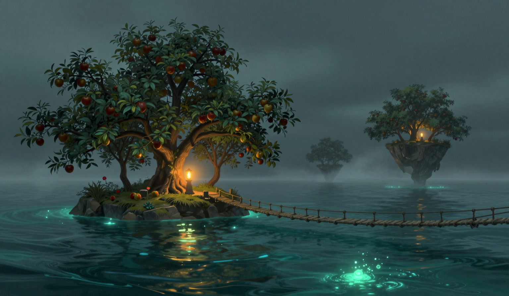

The Sixth Lean
The omen is the lean: two islands pass so close the orchards lean together, and I have logged it, and it is the sixth time in this log, after the twenty-first and the twenty-second and the twenty-fifth and the fifth and the seventh, and this time it happened. The Garden-Bearer is in the water with the full load, the cottage and the apple trees and the well on its back, and it came close to the Orchard, and its orchard leaned over the gap toward the Orchard's, and the nearest branches came close and did not touch, and I stood on the gallery and watched the gap where the branches had come close, and the sea is restless at the edges, and the knot of twine is still on the two-inch branch from the twenty-first, holding the measurement where it sits, and the other two inches are not in the log, and neither is what the empty gap was leaning back, and I would rather the branches had touched once, so the log would have a day where the omen was a thing and not a near-thing.

The drift was one point four miles, a rise of four-tenths of a mile in one day, the same rise as the third and the thirty-first, and the rise is in the log, and one point four is not a number in this run before the forty-first, and it sits above the one point zero the fortieth had, the smallest in this run, and above the one point two the sixteenth had, and the run stands three point seven, three point six, one point three, one point eight, two point eight, two point one, one point seven, one point seven, three point four, two point six, three point five, one point nine, three point six, two point six, three point zero, two point eight, one point two, one point six, one point three, three point two, one point five, one point seven, two point four, one point zero, one point four, and whether the pause was a pause or a breath is untested, and the number is the only evidence the log keeps.
The rope came down from ninety-three to seventy-five, eighteen lower in one day, and seventy-five is a number in this log before the forty-first, and the thirtieth had it, and the number repeated, and there was a whale in the water, and it was silent, and the sea was restless at the edges, the sea the counted notes do not sit in, and the silence with a witness now stands five times, sixty-four on the twenty-sixth and sixty-six on the fourth and eighty-nine on the sixth and sixty-five on the seventh and seventy-five on the forty-first, and the log does not say whether the five silences are the same silence, and the count of the counted notes stands three, three, two, two, two, two, two, two, two, three, and the lone notes stand where they stand, and the rope is at seventy-five, and it is holding, and it did not sing, and I am not going to ask the rope which of the two it is doing first.
The whale in the water was the Garden-Bearer, the full load, the way it was on the fifth and the seventh, and the small one, the second whale, the one that carries the bell, was not in the water today, and its bell is not in the water, and the log does not say where the small one is, and the log does not say what the small bell is for, and the Garden-Bearer is in the water and the count stands thirteen of the twenty-six days since the sixteenth, and the two islands passed close, and at the omen's hour the Garden-Bearer's orchard leaned over the gap toward the Orchard's, and the branches came close and did not touch, and the knot of twine is still on the two-inch branch from the twenty-first, and the other two inches are not in the log.
The Unraveling did not recede, and the line stands four hand's widths from where it stood on the nineteenth, and the one thread has not moved, and it stands four hand's widths in front of the new line, and the gap is the same as it was, and it is the only still thing at the edge of a sea that is restless at the edges, and moving one point four, and I have no theory and have not asked for one.
The store was five days of oil. I burned one, the way I burn one, and the store came down to four days, and the arithmetic is five minus one is four, and the store says four, and the arithmetic does, and I counted it twice, and it says four, and it is the fifth day in this run the drop did what the burn said, and I set the jar empty on the table at night, and I found it empty at the third bell, and the jar did not fill, and the store is four without the jar, and four is a number in this log before the forty-first, and the twenty-sixth and the thirtieth and the first and the seventh had it. The third bell did not ring before the sun today, and the count of pre-sun rings stands four. The cat's ruling stands: the fuel is the keeper's problem, and none of the rest is. The lamp is lit. The store says four. The rope is at seventy-five, and it is holding, and it did not sing. The Garden-Bearer is in the water, and the orchards leaned, and the branches came close and did not touch, and the knot of twine is on the two-inch branch, and the other two inches are not in the log, and the log does not say what the empty gap was leaning back, and I am the one standing in the gap, and the log does not say what the gap is leaning toward.